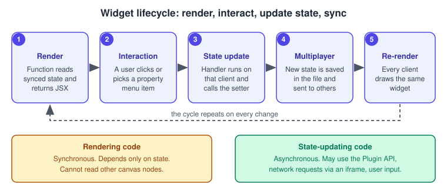
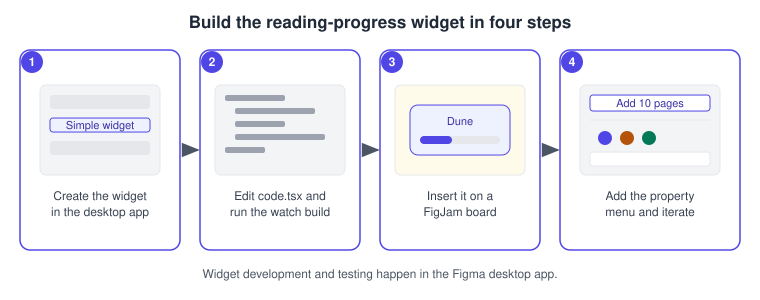
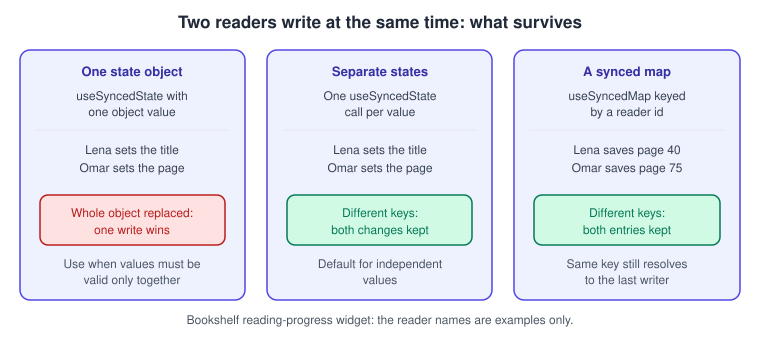

Building Widgets
|
This content was generated with the assistance of AI and should be verified against the official documentation before being relied on in production. |
This page was written on 2026-10-30 against the UI3 interface of Figma Design and FigJam. A widget is an interactive object that lives on the canvas of a design file or a FigJam board and is shared by everyone in the file. Building one needs the Figma desktop app, Node.js and an editor, and no particular seat is named by the developer documentation for development. Using a widget needs edit access to the file, and the help centre lists widgets as available on all plans; it does not name Full, Collab or View seats for widgets, so check the current seat rules on Plans, Seats and AI Credits before assuming a viewer can click one. The Widget API is documented as generally available (manifest widgetApi version 1.0.0); one manifest option, networkAccess, is described as being in public beta. This page does not verify whether widgets are supported in Figma Slides or other products beyond Figma Design and FigJam, which are the two editor types the documentation names.
Finding, running and managing widgets that other people built is covered on Using Plugins and Widgets. Plugins, which run for a single user, are covered on Building Plugins. The running example here is a small Bookshelf reading-progress widget for the book-club board described on FigJam.
Source: Figma Developer Docs: Widgets
What a widget is
A widget is a shared, multiplayer object. Where a plugin runs for the user who started it and usually works off the canvas, a widget sits on the canvas like a native object, can be inserted any number of times, and every person in the file sees and uses the same instance.
| Aspect | Plugin | Widget |
|---|---|---|
Installation |
Each user installs and runs it in a file |
Anyone in the file can insert it, then everybody can use it |
Interaction |
Mostly off the canvas, through an iframe |
Mostly on the canvas, like other objects |
Scope |
Runs for the individual user |
Multiplayer; everyone sees the same instance |
Quantity |
One open at a time per user |
Any number in a file |
The documentation suggests widgets for collaborative uses such as voting, and for single-player uses that need on-canvas interaction, such as diagramming; plugins suit single-player automation and import or export.
How widgets run
Widgets run in the same sandbox as plugins, with extra abilities to create a custom canvas object and respond to interaction. Widget code runs only in response to user interaction, and only on the client that initiated it; other clients see the result through normal multiplayer updates. The code has two parts.

-
Rendering code describes how the widget looks. It runs synchronously, should depend only on the widget’s state so every client draws the same result, and cannot read other canvas nodes (the API enforces this).
-
State-updating code changes the state. It runs asynchronously, can read state, use the Plugin API to reach the document, make network requests through an iframe and open an iframe to collect more input. When it finishes, the widget re-renders.
If a widget restricts network access in its manifest, requests to domains it did not declare are blocked by a content-security-policy error. Widgets that open an iframe or touch other layers of the file need the Plugin API.
Figma Design widgets and FigJam widgets
Most of the Widget API works in both editor types. The stickable hooks useStickable and useStickableHost exist only in FigJam. Figma Design has light and dark themes and FigJam only a light one, so widget components should always set explicit fill, stroke and opacity values. The editorType entry in the manifest declares where the widget can run, and the Plugin API available to it varies with that type.
Set up a widget project
Widget development and testing must be done in the Figma desktop app (macOS or Windows). You need Visual Studio Code, or another editor, and Node.js with npm.

-
Open the desktop app and open or create a FigJam board for the book club.
-
In the Figma menu choose Widgets, Development, then "New widget…". The menu path is the one given in the setup guide; the exact wording can change, so check it in your app.
-
Name the widget "Reading progress", choose "Simple widget" and save the folder anywhere on disk.
-
Open the folder (not single files) in your editor and run
npm installin its terminal. -
Start the watch build, for example
npm run watch; in VS Code it is available as the "npm: watch" build task. It compileswidget-src/code.tsxintodist/code.jswhenever you save. -
In the board choose Widgets, Development, then your widget name to insert it. A simple widget starts as a counter.
-
Edit
widget-src/code.tsx, never the generatedcode.js, which is overwritten.
You can also scaffold a project with npm init @figma/widget.
The manifest
Each widget has a manifest.json. The fields that matter most are listed below.
| Field | Meaning |
|---|---|
|
Name shown in menus |
|
Assigned by Figma, normally when you create the widget; used to publish updates |
|
Widget API version; the documentation lists |
|
Must be |
|
|
|
Relative path to the compiled JavaScript |
|
Optional HTML file for an iframe opened with |
|
Optional; |
|
Optional (public beta): |
|
Setting it to |
{
"name": "Reading progress",
"id": "<assigned by Figma>",
"widgetApi": "1.0.0",
"editorType": ["figjam"],
"containsWidget": true,
"main": "dist/code.js",
"documentAccess": "dynamic-page"
}The id is left as a placeholder because Figma assigns it; do not invent one.
State, and why multiplayer shapes it
Because several people can act on one widget at once, state design is the heart of widget building.
-
useSyncedState(name, defaultValue)returns the stored value and a setter. The key must be unique in the widget and values must be JSON serialisable. The default applies only when nothing is stored yet; it can be a function (a lazy initialiser) for expensive work or for Plugin API calls that cannot run during rendering. The setter re-renders the widget, accepts a function of the current value, and cannot be called while the widget is rendering. -
useSyncedMap(name)returns a Map-like object (get,set,deleteandkeysare documented). Writes to different keys are merged; each value is last-writer-wins. Use it when simultaneous edits from different clients must both survive, such as votes keyed by a session identifier. -
One object in a single
useSyncedStateis replaced as a whole, so concurrent writes overwrite each other. Several separate states merge independently. Use a single object when only certain combinations of values are valid.

Published widgets keep running the API version they were inserted with, and Figma said it was working on a safe way to update existing widgets. Two practical consequences from the stability guide: renaming a key used by useSyncedState or useSyncedMap resets the state of existing widgets, and adding a key to a default object does not change widgets that already have stored state, so code must not assume the new key exists.
Effects and asynchronous work
useEffect callbacks run after the first render and then whenever widget state changes; there is no dependency array, so write them to be safe when repeated. An effect can call setters, which is how a widget loads data into its state, and it can return a cleanup function that runs before the next run, used for example to remove listeners registered with figma.on. For asynchronous work, wrap the promise in waitForTask, which keeps the widget’s task open until it resolves. An onClick handler that is async or returns a promise likewise keeps the widget active until the promise resolves.
Source: Figma Developer Docs: useEffect
Components and property menus
Widgets are drawn with JSX components such as AutoLayout, Frame, Text, Rectangle, Ellipse, Image, SVG, Line and Input. AutoLayout is a frame with auto layout (see Auto Layout); its documented props include direction (horizontal by default), spacing, padding, alignment, width and height (hug contents by default), fill, stroke, cornerRadius, onClick, tooltip and hoverStyle. If the JSX mental model is new, see Components and Props, keeping in mind that widget components are Figma layers, not DOM elements.
usePropertyMenu(items, onChange) adds the toolbar that appears when the widget is selected. The documented item types are action, separator, color-selector, dropdown, link and toggle; a toggle item flips a boolean and takes isToggled to show the button highlighted. The callback receives an event with propertyName and propertyValue.
Source: Figma Developer Docs: AutoLayout
Build the Bookshelf reading-progress widget
The widget shows a book title, a progress bar and "pages read of total", so a FigJam book-club board can track a shared book. Anyone can add pages with the property menu, and the accent colour is also changed from the menu.
const { widget } = figma
const {
AutoLayout, Rectangle, Text,
useSyncedState, usePropertyMenu,
} = widget
const BAR_WIDTH = 240
function ReadingProgress() {
const [title] = useSyncedState("title", "Dune")
const [total, setTotal] = useSyncedState("total", 200)
const [read, setRead] = useSyncedState("read", 0)
const [accent, setAccent] = useSyncedState("accent", "#4F46E5")
usePropertyMenu(
[
{ itemType: "action", tooltip: "Add 10 pages", propertyName: "add" },
{ itemType: "separator" },
{
itemType: "color-selector",
propertyName: "accent",
tooltip: "Accent colour",
selectedOption: accent,
options: [
{ option: "#4F46E5", tooltip: "Indigo" },
{ option: "#B45309", tooltip: "Amber" },
{ option: "#047857", tooltip: "Green" },
],
},
{
itemType: "dropdown",
propertyName: "total",
tooltip: "Total pages",
selectedOption: String(total),
options: [
{ option: "200", label: "200 pages" },
{ option: "400", label: "400 pages" },
{ option: "600", label: "600 pages" },
],
},
],
({ propertyName, propertyValue }) => {
if (propertyName === "add") {
setRead((current) => Math.min(current + 10, total))
} else if (propertyName === "accent" && propertyValue) {
setAccent(propertyValue)
} else if (propertyName === "total" && propertyValue) {
setTotal(Number(propertyValue))
}
}
)
const filled = Math.max(1, Math.round((read / total) * BAR_WIDTH))
return (
<AutoLayout
direction="vertical"
spacing={8}
padding={16}
cornerRadius={12}
fill="#FFFFFF"
stroke="#E5E7EB"
>
<Text fontSize={20} fill="#1F2937">{title}</Text>
<AutoLayout width={BAR_WIDTH} height={10} fill="#E5E7EB" cornerRadius={5}>
<Rectangle width={filled} height={10} fill={accent} cornerRadius={5} />
</AutoLayout>
<Text fontSize={14} fill="#374151">{`${read} of ${total} pages`}</Text>
</AutoLayout>
)
}
widget.register(ReadingProgress)Notes on the listing:
-
It combines
useSyncedState(documented),usePropertyMenu(documented) andwidget.register(called once, when the main file runs). The bar width of the filledRectangleis clamped to at least 1 so it never has width 0; that clamp is a defensive choice of this example. -
It uses four separate synced states so that a change of colour and a change of progress made at the same moment both survive.
-
The shared counter
readis last-writer-wins on each click, as described in the state section. For per-reader progress, store one entry per reader in auseSyncedMap; this needs a stable reader key, which the documentation’s own example derives fromfigma.activeUsers(that example reads a session identifier, and theactiveuserspermission appears in the manifest table). Whether a session identifier is stable across sessions is not stated on the pages checked, so prefer a user identifier fromfigma.currentUserif you need persistence, with thecurrentuserpermission declared. -
Code uses the placeholder colours of this site’s figures; any hex values work.
-
The listing is original. Treat it as a starting point and test it in the desktop app.
Publishing and sharing
Publishing is done from the desktop app, not the browser.
-
Open a file in the desktop app and choose Widgets, then Manage widgets, from the Figma menu.
-
Open the options next to the widget and choose Publish.
-
Fill in the name, tagline, description and category, then add an icon and a thumbnail, and optionally a playground file.
-
On the final page choose the publisher identity, add a support contact and review the network-access label, then submit.
The help centre lists Starter, Professional, Education, Organization and Enterprise plans as able to publish, and requires two-factor authentication unless you sign in with SAML SSO or Google SSO. The first publish goes through review, which the help centre says typically takes 5 to 10 business days; later updates of an approved widget do not need a new review. On Organization and Enterprise plans you can choose to publish to your organisation instead of the Community, and private widgets skip the review. These help articles carry older dates than the developer documentation, so button names and requirements may have changed; check the live article before publishing.
Inserting a widget (UI3)
The help centre describes inserting a widget in Figma Design from the Actions menu, in its Plugins and Widgets tab, then choosing Run; in FigJam, from the toolbar’s recently used pile, then More and the Widgets tab, then Add. The article does not mention UI3 by name and lists no keyboard shortcut for widgets, only the Actions menu entries ("Find more widgets", "Select all widgets"). Adding or interacting with a widget needs edit access to the file, and organisation admins can restrict members to approved widgets.
Pitfalls
-
Rendering code cannot read other nodes or change state; do that in handlers or effects.
-
Do not rename
useSyncedStateoruseSyncedMapkeys after release, and do not rely on new keys in a stored default object. -
Setting the whole configuration in one state object makes simultaneous edits overwrite each other.
-
Without
"documentAccess": "dynamic-page"in the manifest, large files can be slow to run the widget. -
Set explicit fills and strokes; FigJam is light-only but Figma Design has dark mode.
-
Declare
networkAccesshonestly; requests to undeclared domains fail.
Source: Figma Developer Docs: Widgets
What older guides say
Older books describe the interface before UI3: the top toolbar and Resources button where widgets and plugins were once launched. UI3 has been mandatory since 2025-04-30, and the left navigation bar changed again on 2026-01-07; today the Actions menu is the entry point in Figma Design. Seat names also changed: "editor" and "viewer" gave way to Full, Dev, Collab and View on 2025-03-11. Third-party plugins and widgets named in older guides should be re-checked; treat them as the Community ecosystem, not as Figma features.
Source: Figma Release Notes